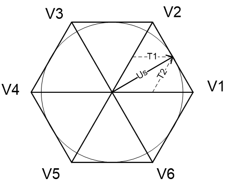
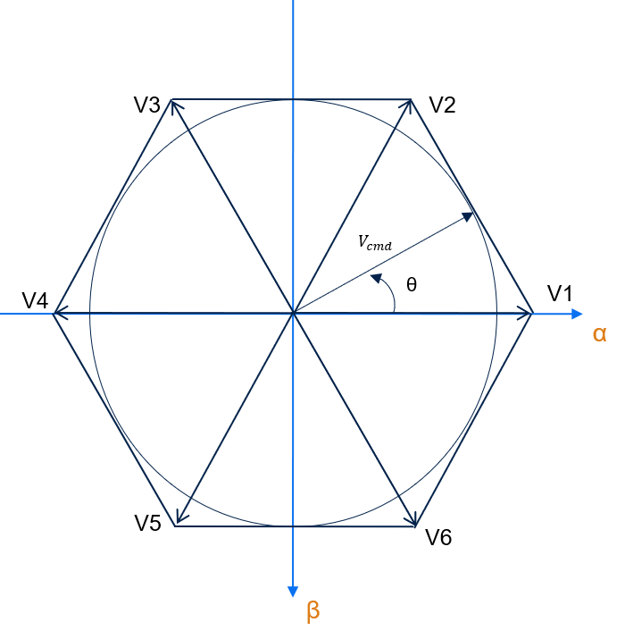
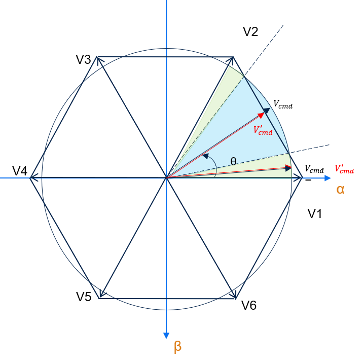
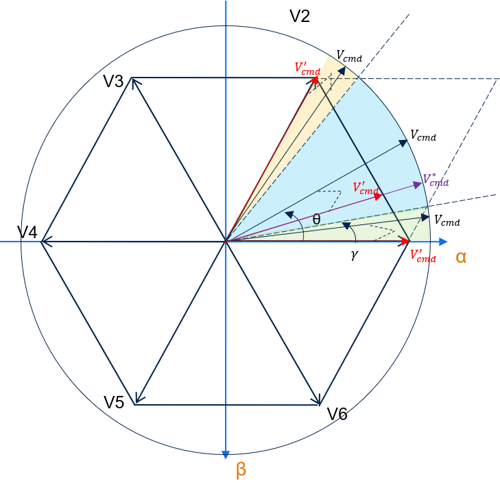
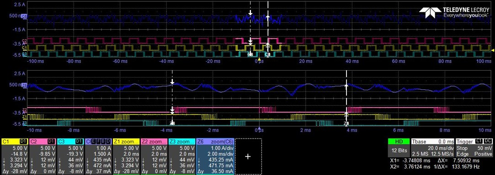

|
STM32 Motor Control SDK MCFW-6.1.0
Software Development Kit to build applications driving PMSM Motors with STM32
|
Loading...
Searching...
No Matches
|
STM32 Motor Control SDK MCFW-6.1.0
Software Development Kit to build applications driving PMSM Motors with STM32
|

Space vector modulation index is limited to √3/2 but there is a way to extend this limit with the over-modulation. This technique is required when the modulation index, as the length of the reference space vector Us, exceeds the edges of the hexagon.
 Inthe linear area, \(V'_{cmd}\) can keep both the amplitude and angle of \(V_{cmd}\), then \(V'_{cmd} = T'_1 * V_1 + T'_2 * V_2\) with \(T'_1 = T_1\) and \(T'_2 = T_2\).

There are two cases:

There are three cases:
| Linear | OVM Mode 1 | OVM Mode 2 | |
|---|---|---|---|
| \(T'_1\) | \(T'_1=T_1\) | If \(T_1+T_2>1\) : \(T'_1=\frac{T_1}{T_1+T_2}\) else \(T'_1=T_1\) | If \(T_1≥1\) : \(T'_1 = 1\) else if \(T_2≥1\) then \(T'_1 = 0\) else \(T'_1=\left(\frac{T_1}{T_1+T_2}+\frac3\pi\gamma\right)\frac{\pi/6}{pi/6-\gamma}\) |
| \(T'_2\) | \(T'_2=T_2\) | If \(T_1+T_2>1\) : \(T'_2=1-T'_1\) else \(T'_2=T_2\) | If \(T_1≥1\) then \(T'_2 = 0\) else if \(T_2≥1\) then \(T'_2 = 1\) else \(T'_2=1-T'_1\) |
Example: F4 three shunt with Shinano motor at 4000 rpm 
- In the middle of this snapshot: the blue curve shows the phase current - Just bellow: the pink, yellow and green curves show the PWM channels
The over-modulation increases the total harmonic distortion, but it allows the modulation index to exceed √3/2.